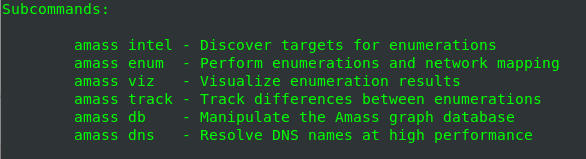

amass
How install:
For the official guide installation see:
https://github.com/OWASP/Amass/blob/master/doc/install.md1. install Snappy package manager → snapd
snapd installation include the snap tool for interacting with snaps packages
4. run snapd service
5. install
Amass 6. run amass
Usage:
USER GUIDE:
https://github.com/OWASP/Amass/blob/master/doc/user_guide.md• amass intel: discover additional root domain names
associated with the organization you are investigating
OPTIONS:
-whois -d → domain names associated
snap run amass intel -whois -d google.com
DNS enumeration and network mapping
OPTIONS:
-d: search for subdomains
snap run amass enum -d google.com
→ IP addresses for discovered subdomains
snap run amass enum -ip -d google.com